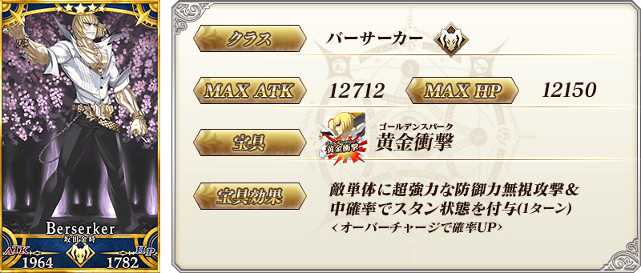
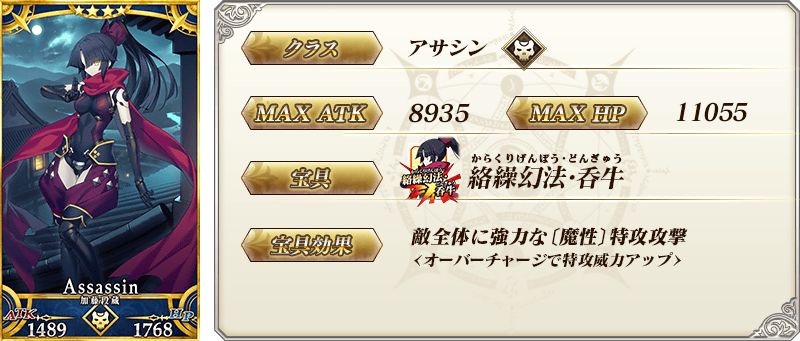
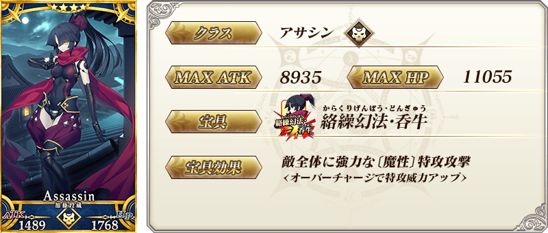
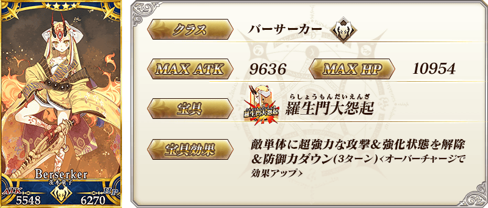
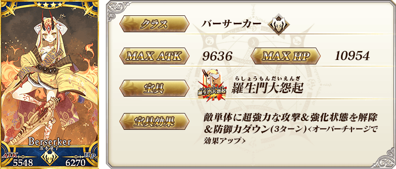
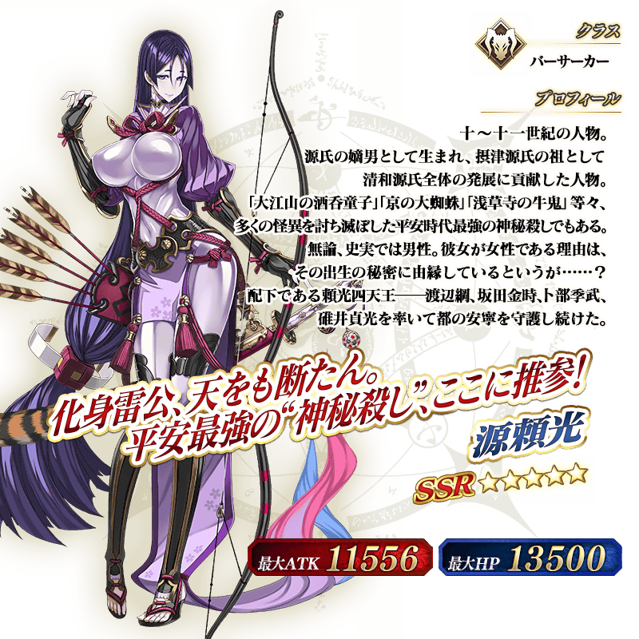
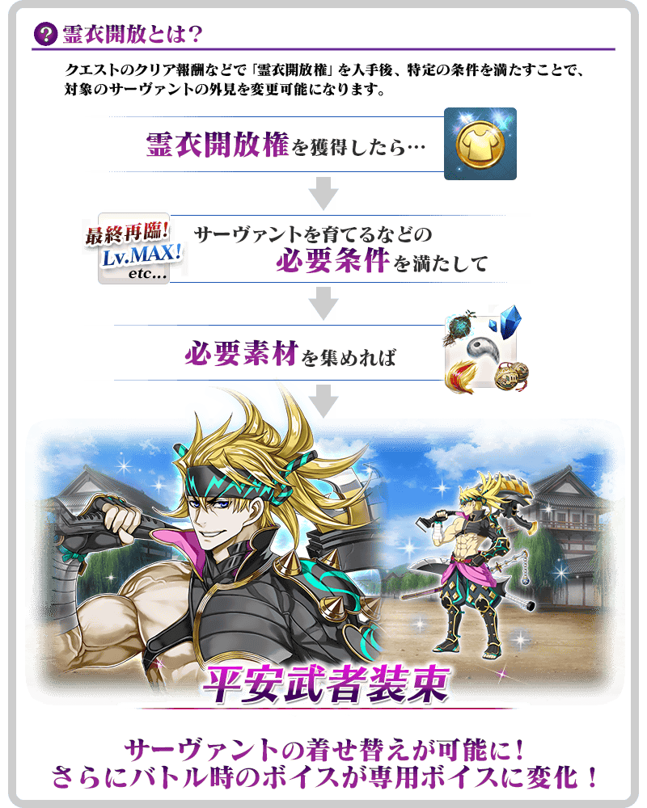

◆『「地獄界曼荼羅 平安京 轟雷一閃」開幕前夕Pick Up召喚(每日交替)』期間◆
期間:2020年11月27日(五) 17:00～12月11日(五) 11:59
期間限定『「地獄界曼荼羅 平安京 轟雷一閃」開幕前夕Pick Up召喚(每日交替)』舉辦！ ※就算未滿足主線關卡開放條件的狀態也能進行本召喚。
本次從第2部 第5.5章「地獄界曼荼羅 平安京 轟雷一閃」關聯從者之中，下述的從者Pick Up！
▼期間限定從者
【每日交替Pick Up】
・★5(SSR)坂田金時(Berserker)
・★5(SSR)源賴光(Berserker)
▼Pick Up從者
【常駐Pick Up】
・★4(SR)加藤段藏
・★4(SR)茨木童子(Berserker)
另外，2016年的「天魔御伽草子 鬼島Pick Up召喚」與2017年的「復刻 天魔御伽草子 鬼島Pick Up召喚(每日交替)」中登場的下述的期間限定概念禮裝常駐Pick Up！
【常駐Pick Up】
・★5(SSR)花より団子
・★4(SR)忠犬待ったなし
・★3(R)秘剣・雉子返し
Pick Up期間中，Pick Up對象從者與概念禮裝的出現機率提升！
詳情請在聖晶石召喚畫面左下的召喚詳細確認。
11次召喚中確定1張★4(SR)以上和確定1位★3(R)以上的從者！ ※確定★4(SR)以上包含從者和概念禮裝。
◆有關從者的注意◆
※請注意本召喚做為每日交替，下述的從者就算舉辦期間中也有不會被抽出來的日子。
・★5(SSR)坂田金時(Berserker)
・★5(SSR)源賴光(Berserker)
※下述的從者在Pick Up期間結束後不會追加到故事召喚。
・★5(SSR)坂田金時(Berserker)
・★5(SSR)源賴光(Berserker)
※本召喚的Pick Up期間中，透過故事進行所追加的下述從者就算通過各章前也能入手。
・★4(SR)加藤段藏
※下述的從者在Pick Up期間結束後仍會在故事召喚被抽出。
・★4(SR)加藤段藏
・★4(SR)茨木童子(Berserker)
◆有關概念禮裝的注意◆
※下述的概念禮裝，Pick Up期間中也能靠友情點數召喚獲得。
・★3(R)秘剣・雉子返し
※在自動變還設定登錄★3(R)概念禮裝的情況，下述的概念禮裝會變成自動變還的對象。
・★3(R)秘剣・雉子返し
◆『「地獄界曼荼羅 平安京 轟雷一閃」開幕前夕Pick Up召喚(每日交替)』Pick Up內容◆
| Pick Up期間 | Pick Up內容 | |
|---|---|---|
| 每日交替Pick Up | 全天Pick Up | |
|
11/27(五) 17:00～ 11/28(六) 22:59 |
★5 坂田金時(Berserker) ★5 源賴光(Berserker) |
★4 加藤段藏 ★4 茨木童子(Berserker) |
|
11/28(六) 23:00～ 11/30(一) 22:59 |
★5 坂田金時(Berserker) | |
|
11/30(一) 23:00～ 12/2(三) 22:59 |
★5 源賴光(Berserker) | |
|
12/2(三) 23:00～ 12/5(六) 22:59 |
★5 坂田金時(Berserker) ★5 源賴光(Berserker) |
|
|
12/5(六) 23:00～ 12/7(一) 22:59 |
★5 坂田金時(Berserker) | |
|
12/7(一) 23:00～ 12/9(三) 22:59 |
★5 源賴光(Berserker) | |
|
12/9(三) 23:00～ 12/11(五) 11:59 |
★5 坂田金時(Berserker) ★5 源賴光(Berserker) |
|
※請注意會以每日交替變更Pick Up的從者。


 ※上述「★5(SSR)源賴光(Berserker)」的卡面為靈基再臨第1階段。
※上述「★5(SSR)源賴光(Berserker)」的卡面為靈基再臨第1階段。
 

 
※上述「★4(SR)茨木童子(Berserker)」的卡面為靈基再臨第1階段。

※上述「★4(SR)茨木童子(Berserker)」的卡面為靈基再臨第1階段。

|
★★★★★SSR |

|
★★★★SR |

|
★★★R |

 ※上述「★5(SSR)源賴光(Berserker)」的立繪為靈基再臨第1階段。
【12月2日(三) 20:00追記】
「★5(SSR)坂田金時(Berserker)」的新靈衣登場！
想開放「★5(SSR)坂田金時(Berserker)」的靈衣「平安武者裝束」的話，除了靈衣開放權外再加上必須滿足一些開放條件。
◆開放時間◆
2020年12月4日(五) 17:00～(預定)
◆有關靈衣開放權的注意◆
※「★5(SSR)坂田金時(Berserker)」的靈衣一部份語音會隨著外觀變化。
※請注意未持有「★5(SSR)坂田金時(Berserker)」的情況，可入手靈衣開放權。但無法進行靈衣開放。


「靈衣開放」是自強化畫面進行。
※「靈衣開放」後會自動切換戰鬥角色和圖示。若想回到「靈衣開放」前的狀態和變成其他再臨階段的情況，可自從者詳細畫面變更。 ※進行「靈衣開放」不會讓職階和能力等有所變化。
【12月2日(三) 20:00追記】
介紹開放靈衣「平安武者裝束」的「★5(SSR)坂田金時(Berserker)」寶具演出！
在「Fate/Grand Order」官方網站內的公告中，以影片公開寶具演出，敬請確認。
介紹在本召喚Pick Up的4位從者寶具演出！
在「Fate/Grand Order」官方網站內的公告中，以影片公開寶具演出，敬請確認。
【★5(SSR)坂田金時(Berserker)】
【★5(SSR)源賴光(Berserker)】
【★4(SR)加藤段藏】
【★4(SR)茨木童子(Berserker)】

強化本召喚中登場的「★5(SSR)坂田金時(Berserker)」「★4(SR)加藤段藏」「★4(SR)茨木童子(Berserker)」的特別關卡「從者強化關卡」，在迦勒底之門永久追加。
不僅進行對象從者的強化，也可獲得聖晶石做為關卡通過報酬。
※從者強化關卡請注意在沒有文字冒險部份。
◆追加時間◆
2020年11月27日(五) 17:00～
◆開放條件◆
持有的強化對象從者，必須使其最終再臨。
※未持有對象從者的話，不會出現關卡。
※關卡沒有舉辦期限。


其他還有，『「地獄界曼荼羅 平安京 轟雷一閃」開幕前夕宣傳活動』同時舉辦！
另外，第2部 第5.5章「地獄界曼荼羅 平安京 轟雷一閃」開幕預定！
關於詳情，請自下述橫幅確認。
■「地獄界曼荼羅 平安京 轟雷一閃」開幕前夕宣傳活動詳細情報

■第2部 第5.5章「地獄界曼荼羅 平安京 轟雷一閃」詳細情報